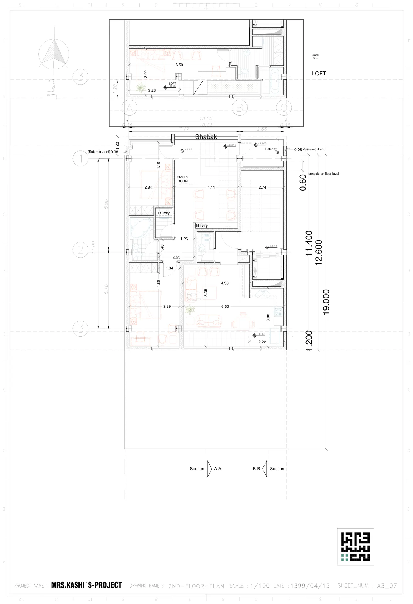

نقشه · طرح ۱۳۹۹
پلان طبقهٔ دوم با نیمطبقه
طبقهٔ دوم (+۸٫۸۸) و نیمطبقهٔ روی آن
{kind=link}

به چه نگاه کنیم
- FAMILY ROOM با زیرنویس «نشیمن خصوصی» و عرض ۴٫۱۱ در نیمهٔ شمالی، جدا از نشیمن اصلی ۶٫۵۰×۵٫۳۵ در جنوب.
- نوشتهٔ Shabak روی لبهٔ شمالی، بالای بالکن ۱٫۸۰ متری با تراز +۹٫۸۰۵: مشبک این بار جلوی خیابان است.
- Laundry (رختشویخانه) به عرض ۱٫۲۶ کنار حمام غربی با وان بیضی.
- برچسب library روی دیوار میانی و نوشتهٔ console on floor level ۰٫۶۰ در سمت راست.
- دو اتاق خواب غربی: ۲٫۸۴×۴٫۱۰ در شمال و ۳٫۲۹×۴٫۸۰ در جنوب.
- پیشخوان آشپزخانهٔ ۳٫۸۰ در گوشهٔ جنوبشرقی نشیمن، با اندازهٔ ۲٫۲۲ و تراز +۸٫۸۸.
- کادر نیمطبقه بالای برگه: اتاق خواب ۶٫۵۰×۳٫۰۰، حمام با وان، Study Box و پله؛ نشانهٔ ترازش «LOFT +۶٫۰۸» است — همان عدد نیمطبقهٔ اول.
- پلهٔ اصلی ۲٫۷۴ در دهانهٔ شمالشرقی کنار آسانسور؛ درز انقطاع ۰٫۰۸ دو طرف.
فضاها
نشیمن خصوصی (Family Room)، نشیمن و ناهارخوری، آشپزخانه، کتابخانه، رختشویخانه، اتاق خواب (۲)، حمام، سرویس بهداشتی، بالکن شمالی، پلکان و آسانسور، نیمطبقه: اتاق خواب، نیمطبقه: حمام، نیمطبقه: اتاق کار (Study Box)
یادداشت
طبقهٔ دوم یک واحد کاملتر با نشیمن خصوصی، کتابخانه و رختشویخانه است و نیمطبقهٔ خودش را دارد؛ مشبک از حیاط به نمای خیابان آمده تا بالکن شمالی پشت پرده نماند. آنچه حل نشده: تراز نیمطبقه روی برگه «+۶٫۰۸» نوشته شده که کپی نیمطبقهٔ اول است و نمیتواند بالای +۸٫۸۸ درست باشد؛ تراز واقعی آن روی هیچ برگهای نیست. باز هم مرز واحد و مساحت ندارد. کادر عنوان: MRS.KASHI`S-PROJECT / 2ND-FLOOR-PLAN / ۱۳۹۹/۰۴/۱۵ / A3_07.